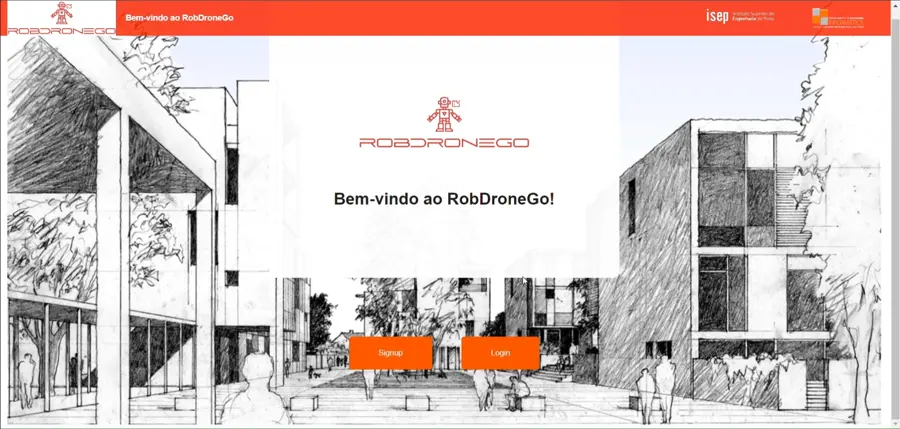
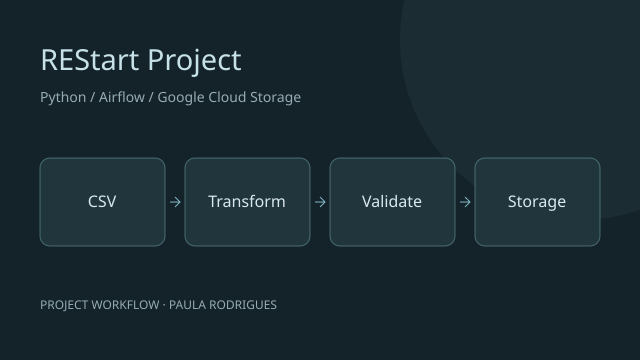
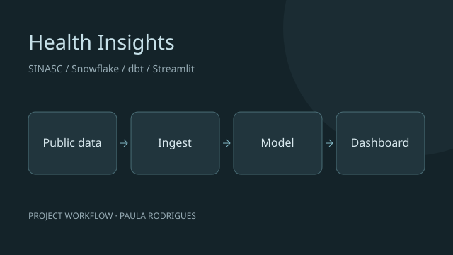
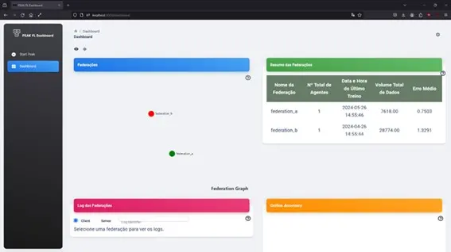
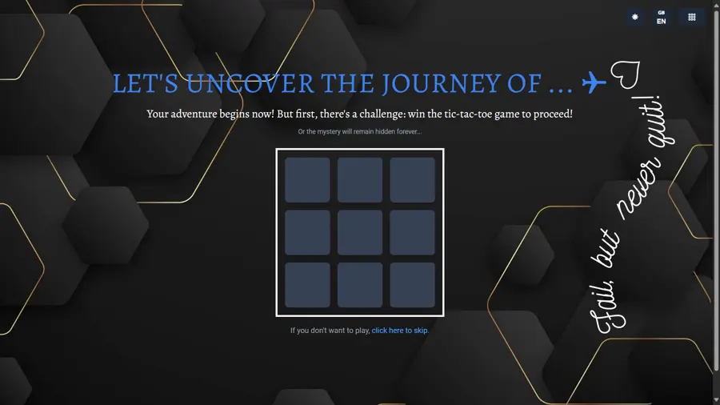
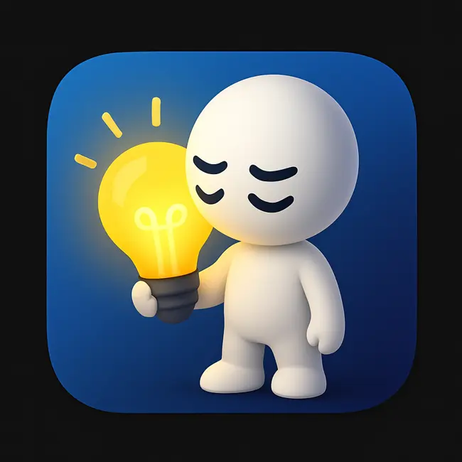
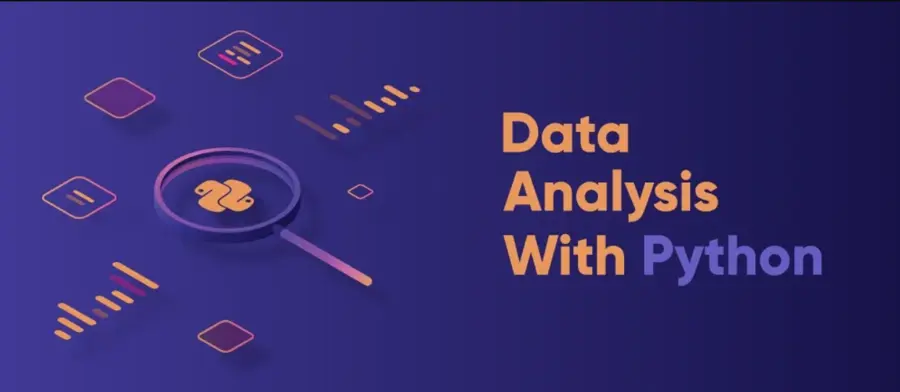
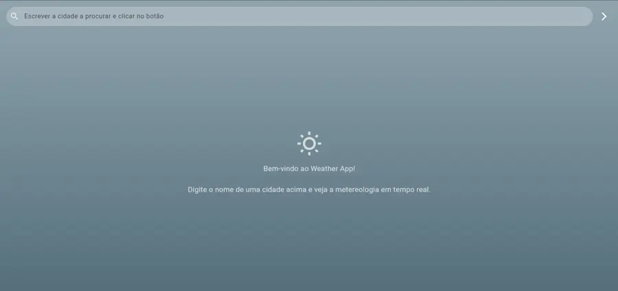

RobDroneGo
Protótipo de gestão de uma frota de robôs e drones, com pedidos de tarefas e planeamento da execução. Alguns módulos foram desenvolvidos parcialmente.
Node.js · Angular · Prolog · MongoDB · .NET
Informática · Saúde · Curiosidade
Gosto de perceber o problema antes de construir a solução. Entre a saúde e a informática, encontro novas formas de pensar, experimentar e aprender.
Move o cursor ou diz-me olá.
01 / SOBRE MIM
Sou a Paula Rodrigues. O que liga o meu percurso é a vontade de perceber, aprender e fazer melhor.
O meu percurso começou nas análises clínicas, onde aprendi a trabalhar com rigor, responsabilidade e em equipa. O interesse pela tecnologia levou-me a concluir a licenciatura em Engenharia Informática no ISEP.
Na faculdade, descobri interesse por várias áreas da informática. Hoje, continuo a explorar diferentes desafios através de projetos académicos e pessoais, com curiosidade e vontade de encontrar o meu caminho.
Continuo a desenvolver competências através de projetos académicos e pessoais, cursos, bootcamps e encontros de tecnologia. Esta experiência complementa o meu trabalho nas análises clínicas e a formação em Engenharia Informática.
02 / PROJETOS SELECIONADOS
Projetos académicos, pessoais
e desafios técnicos.

Protótipo de gestão de uma frota de robôs e drones, com pedidos de tarefas e planeamento da execução. Alguns módulos foram desenvolvidos parcialmente.
Node.js · Angular · Prolog · MongoDB · .NET

Pipeline modular para preparar dados financeiros de um conjunto público, com limpeza, validação, relatórios, testes e orquestração com Apache Airflow. Desenvolvido no bootcamp [RE]Start.
Python · Pandas · Apache Airflow · Docker · Google Cloud Storage · Pytest

Projeto de aprendizagem com dados públicos de nascimentos do SINASC: ingestão, modelação com dbt, testes de qualidade e um dashboard em Streamlit. Liga a saúde à exploração de ferramentas de informática.
Python · SQL · Snowflake · dbt · Databricks · Streamlit

Dashboard para visualizar e monitorizar sistemas de aprendizagem federada, com métricas e resultados que permitem analisar o desempenho dos diferentes nós participantes.
React · ECharts · Flower · XMPP · Docker

Primeiro portefólio com suporte a vários idiomas e integração com Firebase para guardar opiniões dos visitantes. Publicado na Vercel.
Next.js · TypeScript · Tailwind CSS · Firebase

Mascote digital que reage às interações do utilizador. Um projeto para explorar eventos DOM e gestão de estado, com novas funcionalidades e melhorias de design em perspetiva.
Electron · JavaScript · Node.js

Análise de um conjunto público de dados de comércio eletrónico brasileiro: limpeza, modelação, análise exploratória, dashboards e modelos preditivos com Python.
Python · Pandas · Jupyter Notebook · Plotly · Seaborn

Aplicação móvel em Flutter que apresenta a temperatura e as condições meteorológicas. Um ponto de partida para explorar novas funcionalidades e melhorar a experiência de utilização.
Flutter · Dart
O MEU TRABALHO, EM TRÊS PERSPETIVAS
Escolhe uma área e descobre
como se liga ao meu percurso.
Gosto de construir interfaces claras e de explorar a lógica que as suporta. Os meus projetos web e de aplicações são um espaço para experimentar, aprender e melhorar.
Em prática: First Portfolio, RobDroneGo e Mascot Assistant.
Explorar projetos web ↗Gosto de explorar problemas diferentes e de perceber como as várias peças de um sistema se ligam. Cada projeto é uma oportunidade para experimentar ferramentas e formas de pensar.
Em prática: FL_Dashboard e o desafio de engenharia de dados da triggo.ai.
Explorar projetos de dados ↗A experiência nas análises clínicas ensinou-me a cuidar dos detalhes, a trabalhar em equipa e a lidar com responsabilidade. São hábitos que levo para os projetos de tecnologia.
Em prática: qualidade laboratorial, acompanhamento de estágios e gestão de stocks.
Conhecer o meu percurso ↗03 / COMPETÊNCIAS
Ferramentas que tenho utilizado nos meus projetos e explorado ao longo da formação.
JavaScript, TypeScript, React, Angular, Next.js, Tailwind CSS, Flutter e Dart.
Node.js, .NET, MongoDB, Firebase e Electron.
Python, Pandas, Jupyter Notebook, Plotly, Seaborn e ECharts. Formação em Databricks, Snowflake e dbt.
Português — língua materna · Inglês — nível B2.
04 / PERCURSO
Saúde e informática: duas áreas que fazem parte de mim.
Trago comigo o que aprendi e a vontade de continuar a descobrir.
O caminho continua.
À procura de novas oportunidades e de novas formas de aprender.
APRENDIZAGEM CONTÍNUA
Uma seleção de cursos, certificações e experiências em saúde e informática.
ULSSA, EPE
Curso de formação
Análise de situações clínicas e de medidas para melhorar a segurança dos cuidados.
ULSSA, EPE
Curso de formação
Proteção, segurança e confidencialidade dos dados pessoais utilizados na investigação clínica.
SPMS, EPE
Curso de formação
Formação em cibersegurança aplicada ao contexto da saúde.
Data Girls
Bootcamp
Formação prática em engenharia de dados, com aplicação num projeto em equipa.
Cisco Networking Academy / ISEP
Certificados de conclusão
Formação em redes e fundamentos de inteligência artificial.
ULSSA, EPE / European Resuscitation Council
Curso de formação
Sysmex
Webinário
AEICBAS-UP
Participação em congresso
Mayo Clinic Laboratories
Formação e avaliação
OutSystems
Certificações
Duas certificações em desenvolvimento de aplicações nas plataformas O11 e ODC.
triggo.ai
Bootcamp
Formação prática em engenharia de dados e DataOps.
Snowflake
Workshops práticos com badges
Seis workshops com exercícios práticos avaliados na plataforma Snowflake.
Databricks
Percurso de formação
Fundamentos, arquitetura, ingestão de dados, governação e desenvolvimento de fluxos de processamento.
bioMérieux
Formação em equipamento
Formação no sistema BioFire Torch, realizada na ULSTMAD.
Geek Girls Portugal
Participação como mentoranda
SCRUMstudy
Certificação
ISEP
Participação em simpósio
ISEP
Palestra
AEICBAS-UP
Participação em congresso
CellWiki
Participação em atividade formativa
CHU Porto — Hospital de Santo António
Formação em equipamento
AEICBAS-UP
Curso de formação
Curso de formação
Sysmex
Formação em equipamento
Utilização do equipamento, análise de resultados, resolução de incidências e manutenção.
NAU
Curso de formação
ISEP
Participação em simpósio
Bioportugal
Formação em aplicação de controlo da qualidade
Emílio de Azevedo Campos / Sysmex
Formação em equipamento e sistema de validação
Sistemas HST, XE-5000, TS-500, SP1000i e Validação EPU.
IEFP
Formação modular
Planeamento de eventos, organização de equipas e elaboração de orçamentos.
Experiência profissional na Unidade Local de Saúde de Santo António, E. P. E. (ULSSA), e na Unidade Local de Saúde de Trás-os-Montes e Alto Douro, E. P. E. (ULSTMAD).
Instituto Superior de Engenharia do Porto — ISEP, IPP
Formação científica e prática em desenvolvimento de software, sistemas de informação, bases de dados, redes e segurança, com aplicação dos conhecimentos em projetos e na resolução de problemas em equipa.
Escola Superior de Tecnologia da Saúde do Porto — ESTSP, IPP
Formação científica e prática em Bioquímica, Hematologia, Microbiologia e outras áreas das Análises Clínicas, complementada por conhecimentos de controlo da qualidade, segurança alimentar e saúde ambiental.
05 / PARA ALÉM DO CÓDIGO
Interesses que fazem parte de quem sou
e da forma como vejo o mundo.
Gosto de observar o mundo através de uma lente e de descobrir detalhes que, de outra forma, poderiam passar despercebidos.
A música acompanha-me em diferentes momentos: para desligar, ganhar energia ou simplesmente desfrutar do dia.
Gosto de explorar novos mundos, enfrentar desafios e descobrir soluções enquanto jogo.
Uma boa leitura é uma forma de descobrir novas ideias, aprender e conhecer outras maneiras de pensar.
Gosto de descobrir histórias e perspetivas sobre os mais variados temas, com espaço também para a imaginação e a ficção.
Há sempre algo novo para descobrir, dentro e fora do código.
paula.06 / CONTACTO
Disponível para oportunidades em part-time e aberta a propostas em full-time.
Procuro uma oportunidade profissional em informática, numa função júnior ou num estágio, onde possa aplicar o que aprendi e crescer com uma equipa.
Tenho preferência por um regime de part-time, que me permita conciliar esta nova etapa com o meu trabalho por turnos em Análises Clínicas. Estou também aberta a propostas em full-time, dependendo das condições e da oportunidade de desenvolvimento profissional.
Quero contribuir para projetos reais e continuar a aprender. Mais do que escolher já uma área, quero uma oportunidade para começar e crescer.
Porto, Portugal